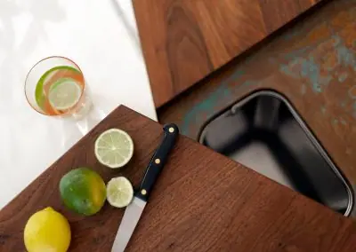

by Emily | Apr 24, 2023 | Brass , Copper , DIY , How To , Interiors , Kitchen | 0 comments
How do you care for aged metal ? It’s a question you might be asking yourself if you’re considering a bespoke metal worktop or other piece for your home or commercial project. We understand that after choosing precisely the unique finish you love, you’ll want to keep it looking good. Taking good care of aged metal isn’t difficult, but it’s important to make sure you get it right. Follow our guide and your piece will stay as stunning as the day it left our workshop for many years to come…
Protecting Lacquer & Wax
We hand-age our patinated metal to achieve the exact finish you’ve envisaged for your space. As soon as we have achieved the effect you’re looking for, we seal the deal: locking in the rich tones and patterns with either a specialist lacquer or crystalline wax. Keeping this protective top layer in tact is crucial to preserving the finish; otherwise, the metal beneath will continue to age and change in appearance. Keep reading to find out about the simple ways you can care for the all-important lacquer or wax on your bespoke piece.
Careful Cleaning
Some acidic cleaners, such as those with vinegar ingredients, and alkaline cleaners, such as those containing bleach, can damage the protective finish on aged metal. Abrasive cleaning products and tools, such as creams and scourers, can also scratch and damage lacquer and wax. Please don’t use acid, alkaline or abrasive products or tools on your aged metal. The safest way to clean your aged copper or brass piece is with warm, soapy water and a microfibre cloth. This combination will clean your surfaces gently but effectively — and keep your unique design locked safely in place.
Heat
It’s important to protect the top layer of your aged brass or copper piece from heat. If you’ve got an aged metal kitchen worktop , keep a supply of mats, coasters, trivets or hot pads close at hand. That way, you will always have something to pop down on your worktop before setting down hot pots, plates and cups. From silicone to cork, there are plenty of stylish options on the market that you can choose carefully to fit in with your kitchen design. Just avoid ferrous metals, such as iron and steel . Which leads us neatly on to our next point…
Ferrous Metals
Some ferrous metals, (metals which contain iron) can cause a chemical reaction when they come into contact with copper or brass. The safest way to avoid this is by not placing pans, candlesticks or any other items made from stainless steel , cast iron or other ferrous metals on your aged metal surfaces.
Spills
Spillages are a regular occurrence in the life of bar tops and kitchen counters. But what might seem like a harmless splash you can clean up later could damage the protective layer on your bespoke metal piece. Just as with the cleaning products, you should protect your wax or lacquer from any foodstuff that’s acid or alkaline. Vinegars, certain sauces, some oils, fruit and particularly citrus juices are all potentially damaging. To keep your metal looking magnificent, always use a chopping board, and clean up any spillages as soon as they occur with warm, soapy water and a microfibre cloth.
Don’t Shape or Bend
Customers sometimes ask us if they can reshape or bend their aged metal piece once it is complete. The short answer to this is no. Whether or not heat is used, bending your metal is likely to effect the overall finish and is not recommended.
The Golden Rules
Copper and brass worktops are incredibly easy to care for when you follow these easy rules. Here’s a quick recap of the important points to keep in mind when caring for bespoke metal, especially aged metal tabletops , bars and kitchen worktops:
- 01
1. Wipe up spillages immediately
- 02
2. Clean regularly and gently with warm, soapy water and a microfibre cloth
- 03
3. Use heat mats or trivets (non-cast iron) when setting down hot pots and crockery
- 04
4. Avoid scratching
- 05
5. If damage to lacquer or wax occurs, re-lacquer or re-wax
That’s it! We hope this guide has helped you learn how to look after your patinated metal piece. And if you don’t own an aged metal kitchen counter , tabletop or other item yet, hopefully this article has shown you just how easy to care for these unique, bespoke pieces are. If you’d like any more advice, or a quote, please drop us a line and we’ll be happy to help.
Products


If you can dream it, we’ll make it.
Bars, balustrades, staircases, worktops, cladding and pieces that don’t have a name yet. Our designers and craftspeople work in brass, copper, zinc and steel, and alongside wood.